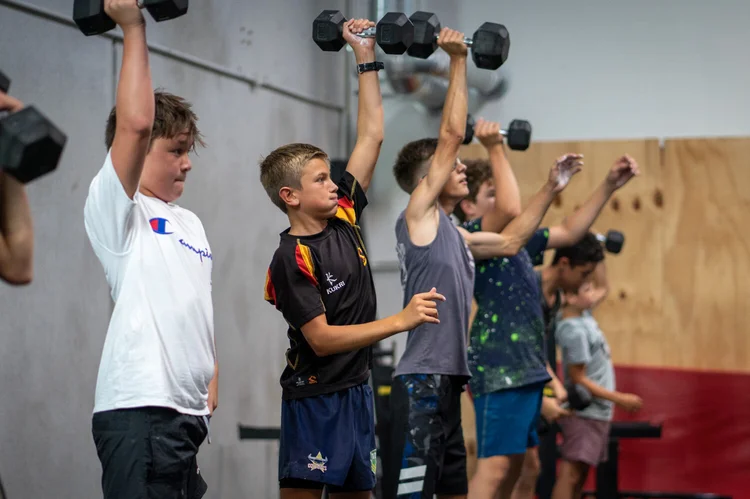

Programma · 14 t/m 17 jaar
Tieners Programma
Speciaal voor jongeren van 14 tot en met 17 jaar. Leer veilig en effectief trainen met altijd een professionele coach naast je.
Wat is het Tieners Programma?
Ons tienerprogramma is speciaal ontwikkeld voor jongeren van 14 tot en met 17 jaar. We geven tieners een alternatief voor de grote sportscholen waar ze zonder begeleiding aan hun lot worden overgelaten. Bij ons staat er altijd een professionele coach naast je die je leert hoe je veilig en effectief traint.
Zo geven we jongeren een goede start met trainen. Ze leren de juiste technieken, bouwen kracht en conditie op, en ontdekken hoe het voelt om fit en sterk te zijn. Dat geeft enorm veel zelfvertrouwen, niet alleen in de gym, maar ook daarbuiten.
De trainingen zijn uitdagend maar altijd afgestemd op het niveau en de ontwikkeling van elke tiener. Er wordt geen druk uitgeoefend: het draait om plezier, vooruitgang en een gezonde basis leggen voor de rest van hun leven.
Waarom CrossFit voor tieners?
Sterker worden
Bouw kracht en conditie op met gevarieerde trainingen die nooit saai worden. Elke les is anders.
Meer zelfvertrouwen
Ontdek wat je lichaam allemaal kan. Elke kleine overwinning bouwt zelfvertrouwen op dat verder reikt dan de gym.
Samen met leeftijdsgenoten
Train in een groep met jongeren van jouw leeftijd. Samen werken, samen lachen, samen groeien.
Wat je krijgt
Professionele coaching
Ervaren coaches die getraind zijn om met jongeren te werken. Veiligheid en plezier staan voorop.
Kleine groepen
Maximale persoonlijke aandacht door te trainen in kleine groepen. Iedereen wordt gezien.
Aangepast aan elk niveau
Of je nu nooit hebt gesport of al jaren bezig bent: elke training wordt afgestemd op jouw niveau.
Gevarieerde trainingen
Geen saaie herhalingen. Elke les is anders met een mix van kracht, conditie, coördinatie en plezier.
Gezonde gewoontes
Leg een sterke basis voor een actieve, gezonde levensstijl. Een investering voor het leven.
Leuke sfeer
Bij ons staat plezier centraal. Tieners komen hier graag naartoe, dat merk je aan de energie in de groep.
Voor ouders
We begrijpen dat je als ouder wilt weten dat je kind in goede handen is. Bij CrossFit Alkmaar staat veiligheid altijd voorop. In tegenstelling tot grote sportscholen waar jongeren zonder begeleiding rondlopen, staat er bij ons altijd een ervaren coach naast je kind. Elke oefening wordt zorgvuldig uitgelegd en opgebouwd.
Tieners leren bij ons niet alleen hoe ze veilig en effectief trainen, maar ontdekken ook hoe het voelt om fit en sterk te zijn. Dat heeft een enorm positief effect op hun zelfvertrouwen, niet alleen in de gym, maar ook op school en in het dagelijks leven.
Benieuwd of dit iets voor jouw zoon of dochter is? Plan een gratis kennismaking, dan kun je zelf zien hoe we werken en al je vragen stellen.